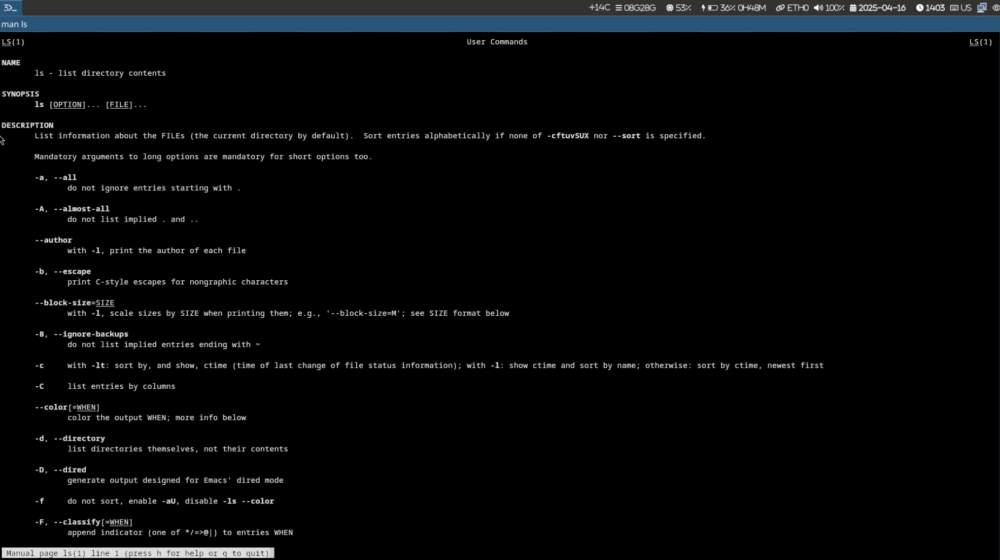
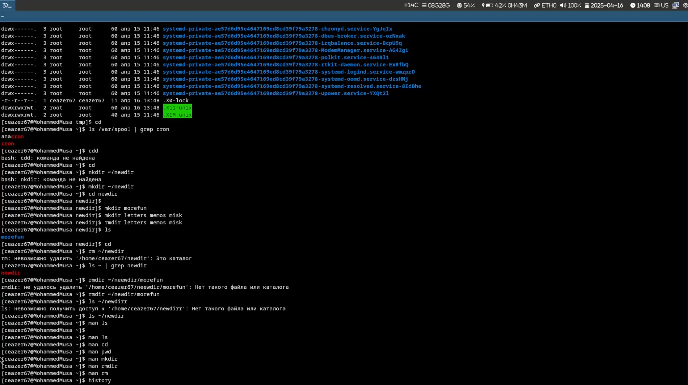
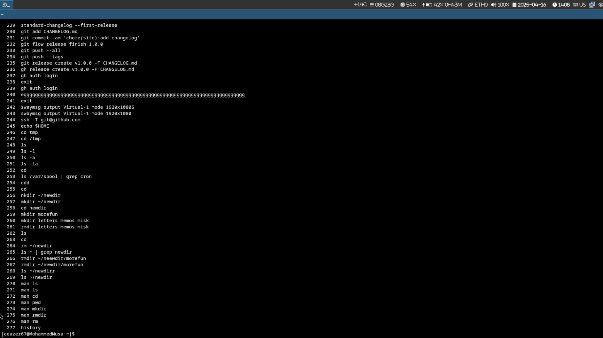

Изучение базовых команд оболочки для работы с каталогами и файлами.
ls -l # подробный список с правами доступа
ls -a # показывает скрытые файлы
ls -la # комбинация предыдущих опций 


Освоены базовые команды работы с файловой системой:
- Навигация: cd, pwd
- Просмотр содержимого: ls с опциями -l,
-a, -R, -t
- Управление каталогами: mkdir, rmdir,
rm -r
- История команд: history, !n
Что такое командная строка?
Интерфейс для ввода команд в виде текстовых выражений.
Как определить абсолютный путь текущего каталога?
Как показать только типы файлов и их имена?
Как отобразить скрытые файлы?
Как удалить файл и каталог?
Как посмотреть историю команд?
Как использовать историю для модифицированного выполнения?
Пример запуска нескольких команд в одной строке
Символы экранирования
Информация ls -l
Права, количество жестких ссылок, владелец, группа, размер, дата,
имя.
Относительный путь
bash cd labs/lab6 # относительно текущего каталога cd ../../lab6 # относительный путь из подкаталога
Информация об команде
bash man ls
Автодополнение команд
Клавиша Tab для автодополнения имен файлов/команд.